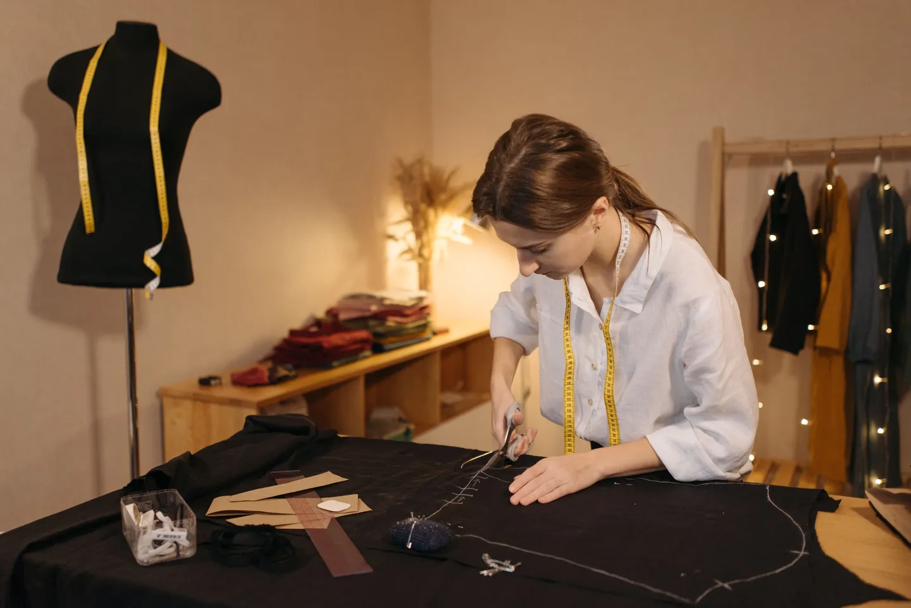
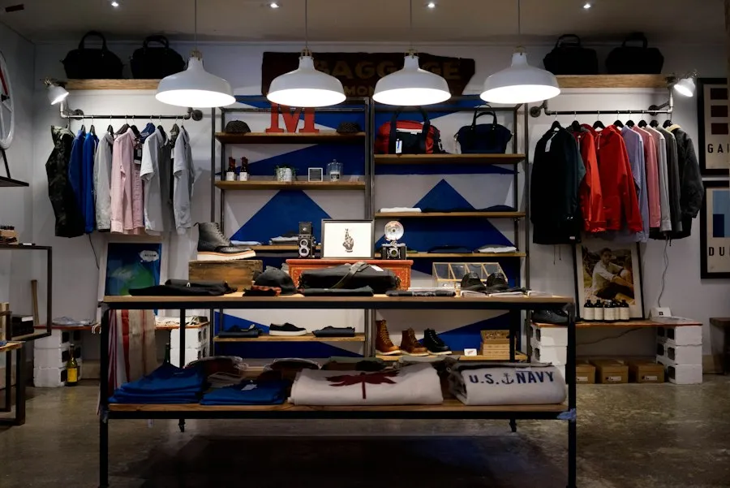
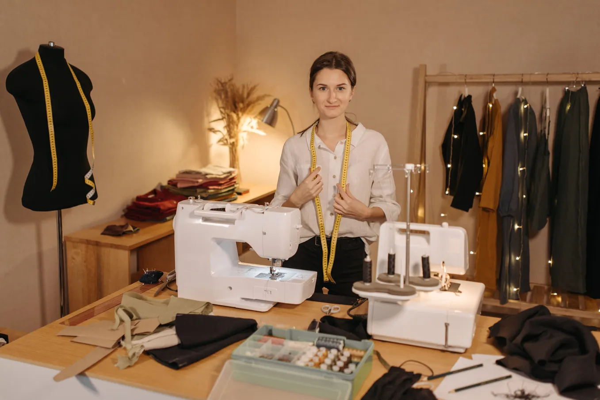
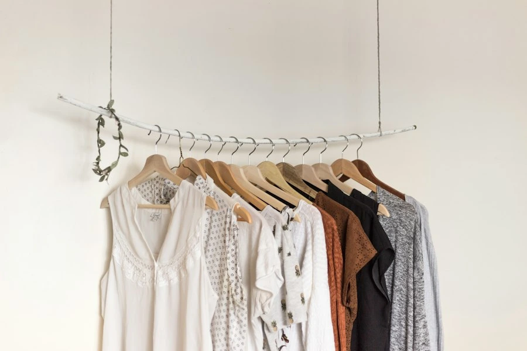
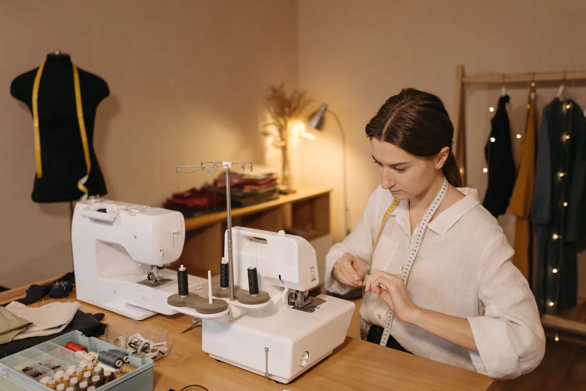
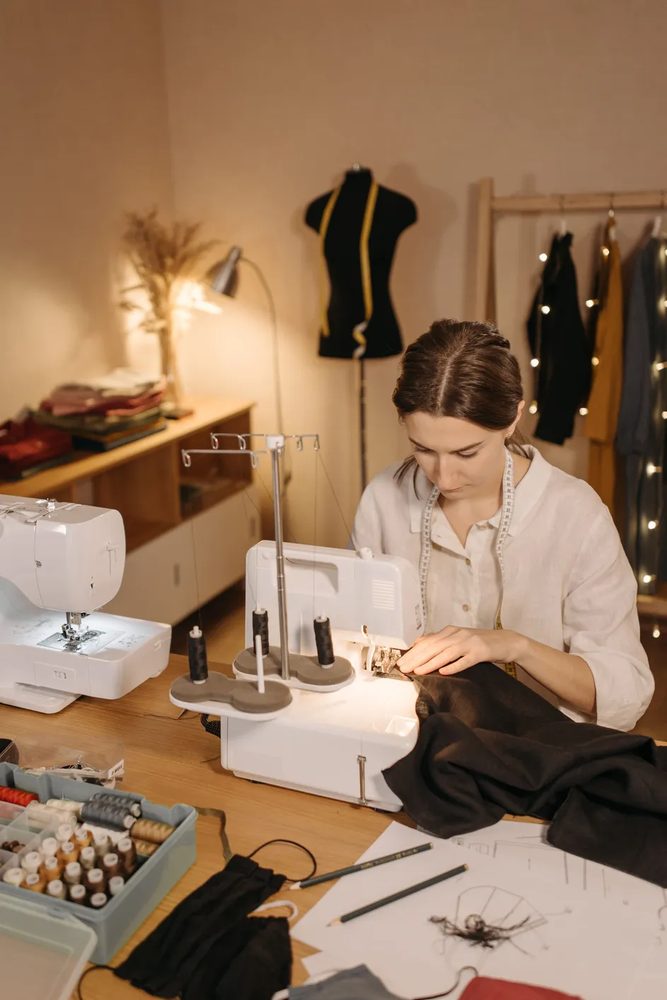

The Geometry of French Moulage & Corsetry
Why draping directly onto 3D dress forms produces organic drape lines that 2D flat patterns could never mathematically predict.
Read ArticlePerspectives on runway dynamics, architectural draping philosophy, sustainable Ahimsa silks, and backstage life at Stackly Atelier.

How our Autumn/Winter showcase redefined runway fluid movement. Exploring how high-twist raw silks behave under rapid catwalk illumination and spatial choreographies.
In-depth research on bespoke silhouette engineering, ethical Ahimsa silk, and cutting-edge haute couture craftsmanship.

Why draping directly onto 3D dress forms produces organic drape lines that 2D flat patterns could never mathematically predict.
Read Article
Championing cruelty-free cocoons and historic master weavers in Tamil Nadu to craft zero-carbon luxury textiles.
Read Article
How virtual cloth simulation eliminates physical fabric prototypes while elevating fitting accuracy for international patrons.
Read ArticleBehind-the-scenes cinematography and unscripted photo journals capturing the frantic elegance moments before runway spotlights illuminate.

Micro-adjustments by our head draper seconds before the runway curtain rise.

Master weavers completing the bridal heirloom cape ahead of departure.

Calibrated spotlights enhancing Ahimsa silk in motion on the runway.
Masterclasses authored by our atelier guild on sustainable silk entomology, historic wire embroidery, and architectural bias moulage.

12 MIN STUDY
15 MIN STUDYStreamed live from our Salem atelier and international runway debuts, featuring bespoke handcrafted couture mastery.